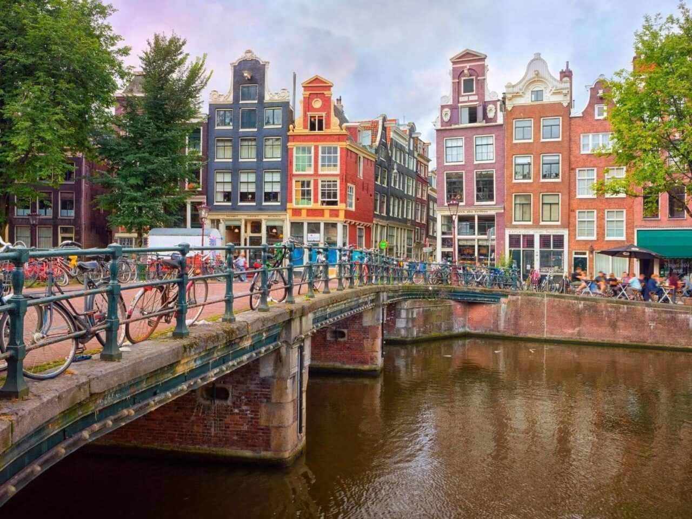
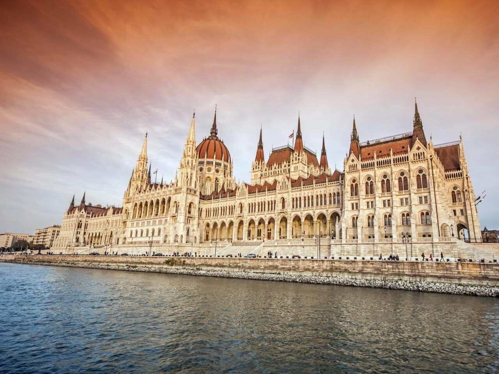
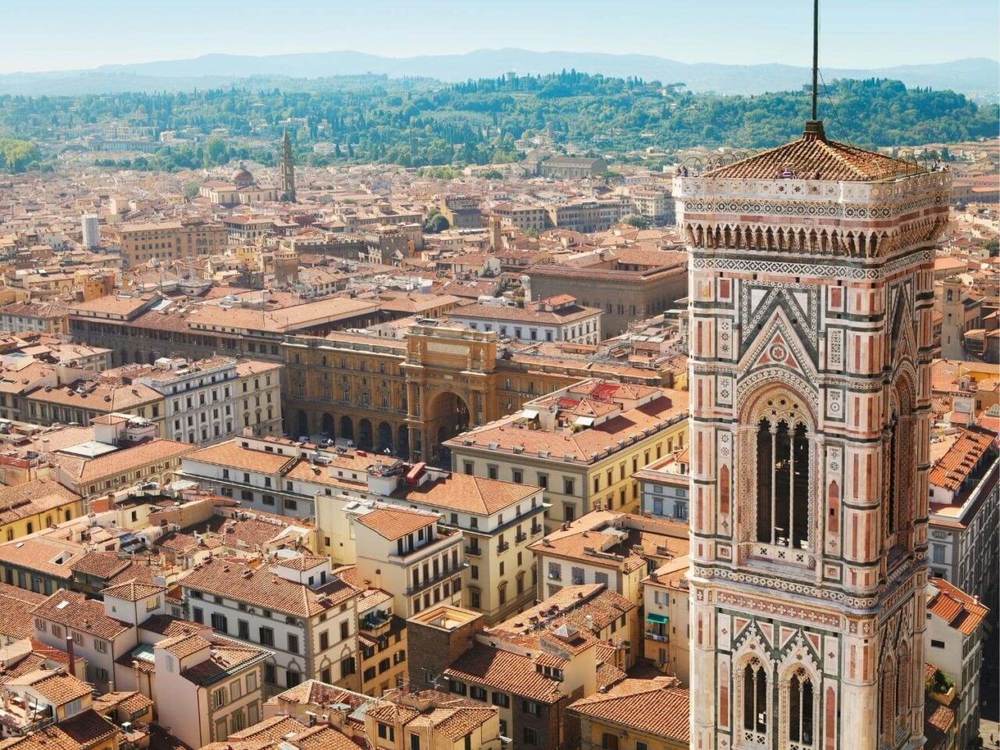
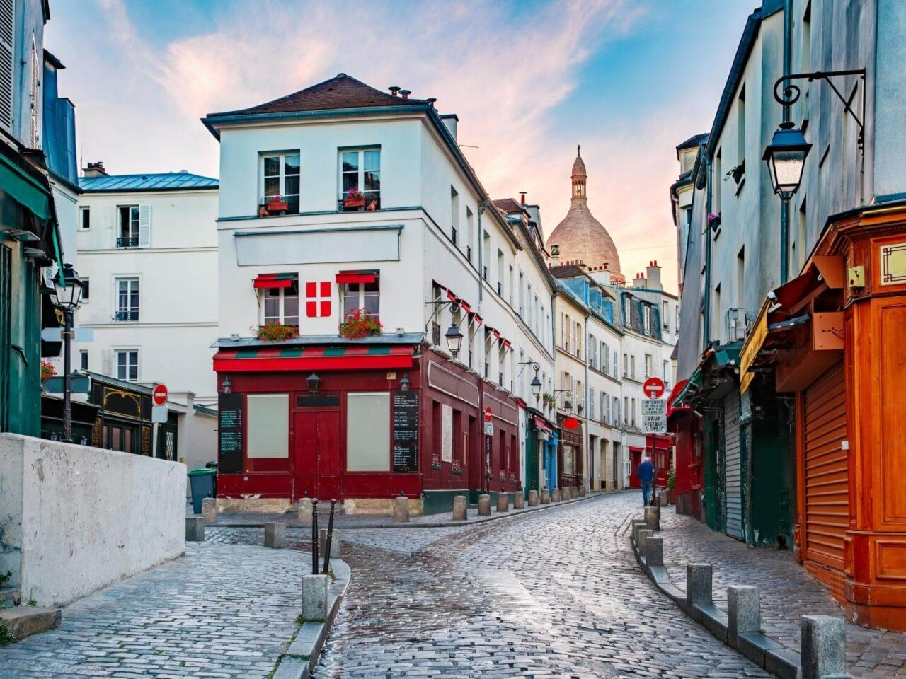
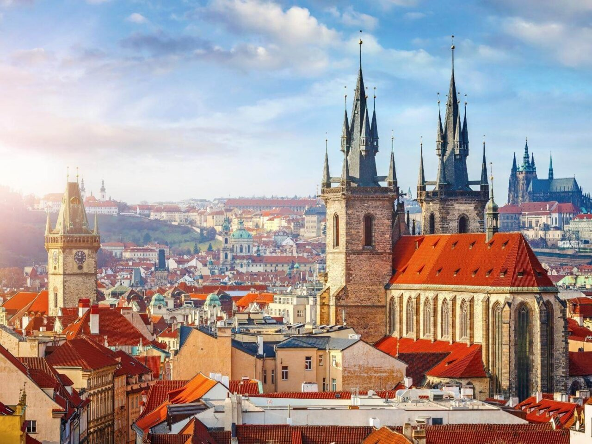
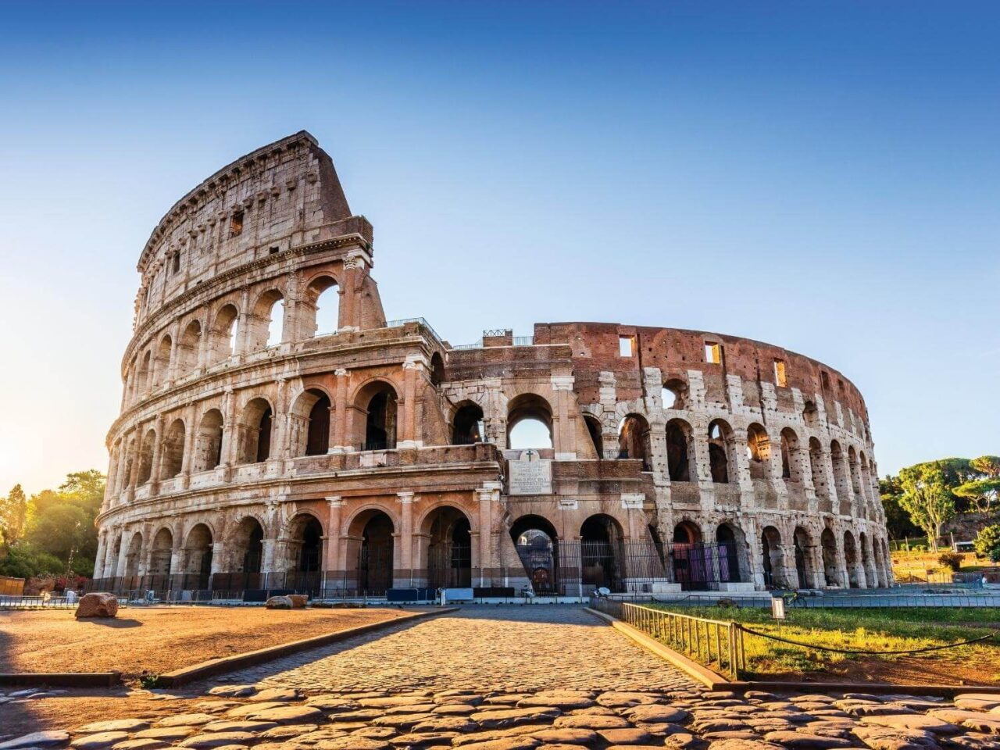

Bem-vindo a Euro Tour
Sobre nós
Euro Tour é um site que ajuda você a planejar sua viajem para a Europa, desde a compra das passagens, até a visita aos pontos turísticos mais importantes de cada região.
Veja abaixo alguns dos pontos turísticos mais procurados!
-

Amsterdã é a capital da Holanda, conhecida por seu patrimônio artístico, um elaborado sistema de canais e casas estreitas com telhados de duas águas, legados da era dourada do século XVII na cidade. O bairro de museus abriga o Museu Van Gogh, o Rijksmuseum, com obras de Rembrandt e Vermeer, e o Stedelijk, que privilegia a arte moderna.
-

Budapeste, a capital da Hungria, é dividida pelo rio Danúbio. Sua ponte Széchenyi Lánchíd, do século XIX, conecta o elevado distrito de Buda ao lado plano de Peste. Um plano inclinado, chamado de Budavári Sikló, sobe a Colina do Castelo até a Cidade Antiga de Buda, onde o Budapesti Történeti Múzeum conta a vida da cidade desde a época romana.
-

Florença, capital da região Toscana, na Itália, abriga muitas obras de arte e arquitetura renascentistas. Um dos seus pontos turísticos mais emblemáticos é o Duomo, catedral com cúpula de telhas de terracota, projetada por Brunelleschi, e o campanário de Giotto. A Galleria dell'Accademia exibe a escultura "Davi", de Michelangelo. A Galeria Uffizi exibe "O Nascimento de Vênus", de Botticelli, e "A Anunciação" de Da Vinci.
-

Paris, a capital da França, é uma importante cidade europeia e um centro mundial de arte, moda, gastronomia e cultura. Sua paisagem urbana do século XIX é cortada por avenidas largas e pelo rio Sena. A cidade é conhecida por monumentos como a Torre Eiffel e a Catedral de Notre-Dame, uma construção gótica do século XII, sendo famosa também pela cultura dos cafés e por lojas de estilistas famosos na Rue du Faubourg Saint-Honoré.
-

Praga, a capital da República Tcheca, é dividida pelo rio Moldava. Apelidada de "a cidade dos cem pináculos", ela é conhecida pela Praça da Cidade Antiga, no coração do seu centro histórico, com construções barrocas coloridas, igrejas góticas e o Relógio Astronômico medieval, que faz uma apresentação animada de hora em hora.
-

Roma, a capital da Itália, é uma cidade cosmopolita, enorme, com quase 3.000 anos de arte, arquitetura e cultura influentes no mundo todo e à mostra. Ruínas antigas como o Fórum e o Coliseu evocam o poder do antigo Império Romano. A Cidade do Vaticano, sede da Igreja Católica Romana, tem a Basílica de São Pedro e os museus do Vaticano, que abrigam obras-primas como os afrescos da Capela Sistina de Michelângelo.